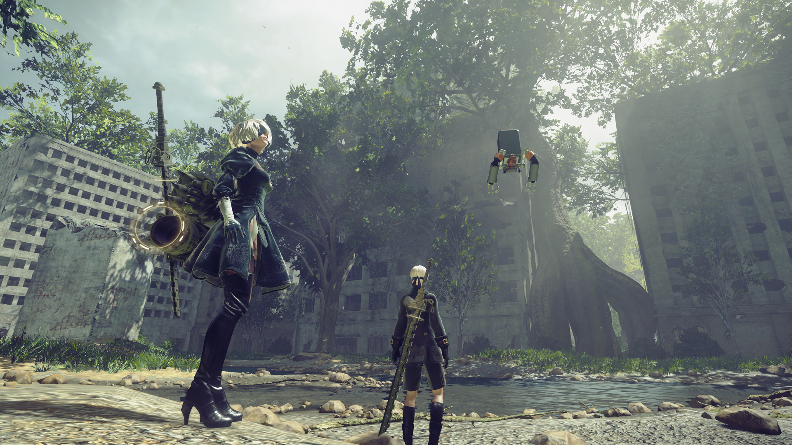

Provocação
Hoje em dia é fácil sentir que a vida se tornou uma luta sem fim pela sobrevivência.
Acorde, vá trabalhar, odeie a vida, relaxe, repita.
O ciclo nunca termina, então quando a inutilidade esmagadora dessa rotina te deixa para baixo, é
natural querer entrar em algum tipo de mecanismo de enfrentamento.
É uma das razões pelas quais eu gosto tanto de videogames, aposto que vocês caíram quase no mesmo
caminho.
Isso cria uma contradição interessante, em um contexto a rotina, a repetição do dia a dia pode ser
uma fonte de ansiedade, depressão e desesperança, mas quando mudamos o contexto para videogames
esses atos mecânicos repetitivos podem ter um efeito totalmente diferente em como vemos o mundo,
mudando nossa percepção da realidade, os jogos podem ter o poder de nos ajudar a encontrar alegria e
propósito mesmo nos lugares mais inesperados.
No entanto, é relativamente raro ver um jogo usar sua base mecânica, a combinação de interatividade
e ação repetitiva para entregar uma mensagem explícita ao jogador, e é por isso que Nier Automata é
um dos jogos significativos e comoventes que já joguei.
Informações sobre o jogo
Nier Automata é um jogo RPG de ação, desenvolvido por Platinum Games e Yoko Taro, distribuído pela Capcom.
O jogo é enorme e digno de se parar e apenas observar o mundo que você está inserido, desde o cenário pós apocalíptico em que a terra se tornou até mesmo a pequena vila de robos pacifistas que querem apenas sobreviver no meio daquela guerra, vivendo e amando até usando estimulantes parecidos com drogas.
Mas há coisas que vão além de toda a ficção e batalhas estilosas dentro do jogo.
A Humanidade
Buscar um sentindo no que não há sentido, o segundo sexo, o medo, a náusea da existência.
Todos esses são temas que o jogo discute de forma extremamente sucinta. Nier Automata não tem uma história simples que se dá para explicar num texto longo ou numa conversa simples de bar, o mais frustrante é saber que o jogo não se propõe a responder dar uma resposta para essas questôes maiores dos seres humanos.
Porém, para mim o que mais me emocionou foi saber o que trouxe o diretor para essa decisão.
Yoko Taro queria com esse jogo perguntar para o seu cerne, o que é ser um ser humano que pensa e tem influência no mundo.
Você ajudaria alguém que te odeia até a alma? Se sim, parabéns você é uma das poucas pessoas que o faria, em sua grande parte as pessoas guardam esse ódio até o fim de sua vida.
Por conta disso o final desse jogo é tão especial para mim, uma sequência de um bullet hell contra os créditos que é quase literalmente impossível de se passar a não ser com a ajuda de outros jogadores, te dar a opção de ajudar outra pessoa em troca de todo o trabalho duro que você teve é uma decisão complexa e nada fácil de se fazer, porém é o que nos torna humanos.
-

- 